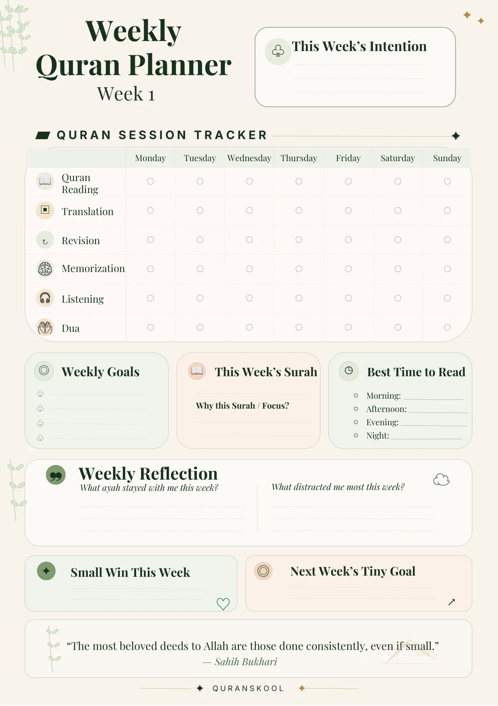
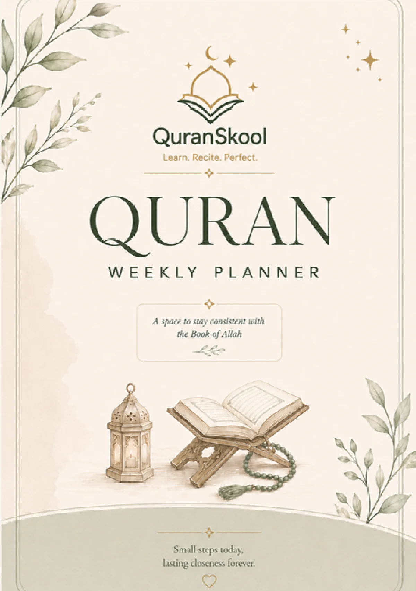

Choose your focus.
Set your intention, choose a Surah, and write down why it matters to you this week.
A LITTLE SPACE FOR WHAT MATTERS
Make room for the Quran in the life you already live. A 12-week printable planner to bring your reading, practice and reflection into one thoughtful routine.


YOUR ACTUAL PLANNER, PREVIEWED
FROM GOOD INTENTIONS TO A GENTLE ROUTINE
Some weeks feel full before they begin. Give your Quran time a place on the page, with a manageable focus and room to notice what you’re learning.
Set your intention, choose a Surah, and write down why it matters to you this week.
Track six kinds of practice from Monday to Sunday and find a reading time that fits your days.
Notice an ayah that stayed with you, acknowledge distractions, and choose one tiny goal for next week.
LOOK INSIDE BEFORE YOU BEGIN
Explore selected pages from the actual PDF. Every weekly spread brings your intention, daily practice and reflections into one view.
PAGE 02 OF 14
Your intention, a Monday-to-Sunday practice grid, weekly goals, a Surah focus, reading times, and space for reflection.
Four sample pages shown. The complete PDF contains 12 numbered weekly spreads, a cover and a closing page.
MORE THAN A READING CHECKLIST
The session tracker gives each practice its own row. Choose what belongs in your week, and mark the days you make time for it.
Make space for recitation.
Spend time with the meaning.
Return to what you’ve learned.
Give your memorization a place.
Include time for listening.
Remember your moments of dua.
MAKE IT PART OF YOUR WEEK
Set your intention, write a few achievable goals, and choose your Surah and reading time.
Mark your practice in the daily grid. Let it be a record of your effort, with room for life to happen.
Write down your small win, reflect on what helped or distracted you, and set your next tiny goal.
WHAT YOU’LL FIND INSIDE
A repeating layout helps you settle into a routine. Each numbered week has a different reminder at the bottom, with a closing page to reflect on the journey.
A cover, 12 weekly spreads and a closing reflection page.
This week’s intention, weekly goals, your chosen Surah, and why you’re focusing on it.
Six practice rows across seven days, plus space to choose your best reading times.
An ayah that stayed with you, distractions, your small win, and next week’s tiny goal.
A closing “Your Quran Journey Continues” page with reflection prompts and a dua.
QURANSKOOL · QURAN WEEKLY PLANNER
Your next step doesn’t need to be a big one. Give it a place on the page.
YOUR WEEKLY QURAN COMPANION
Small steps.
Lasting intention.
Quran Weekly Planner · PDF edition
A LITTLE MORE CLARITY
A 14-page PDF: the cover, weekly planner pages labelled Week 1 to Week 12, and a closing reflection page. Each week uses the same planning structure with a different reminder.
No. The weeks are numbered rather than tied to calendar dates. Each spread runs Monday to Sunday, so you can choose the week you want to begin.
This page presents the PDF edition. You can print it and fill it in by hand. A physical book is not included in the PDF edition.
You can open the PDF in a compatible annotation app to add handwriting or text. It does not have built-in interactive form fields, and an annotation app is not included.
The product described here is the PDF planner. A Canva template link or editable presentation file is not included in this offer.
Use the tracker to support goals that are manageable for you. You can focus on a few areas and adjust your plan as your routine changes.